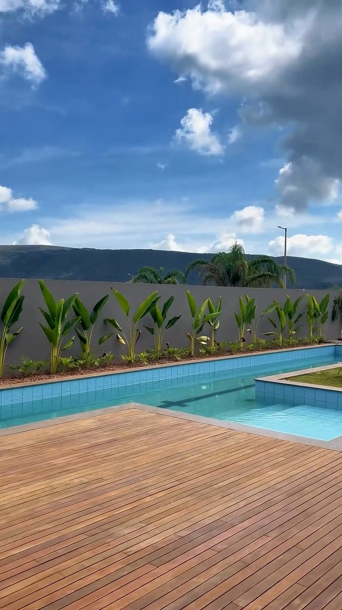
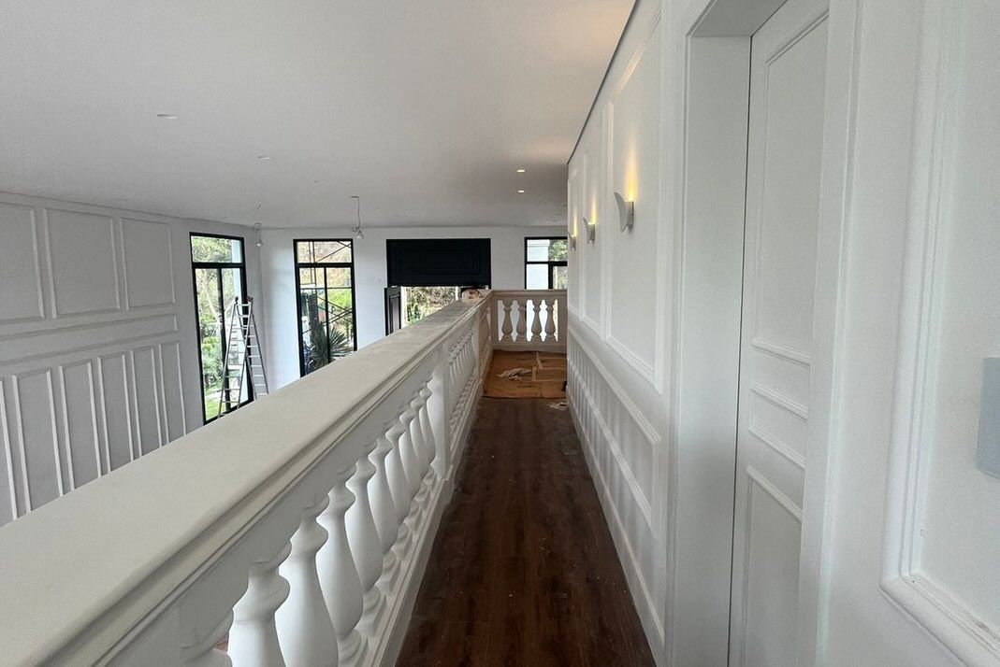
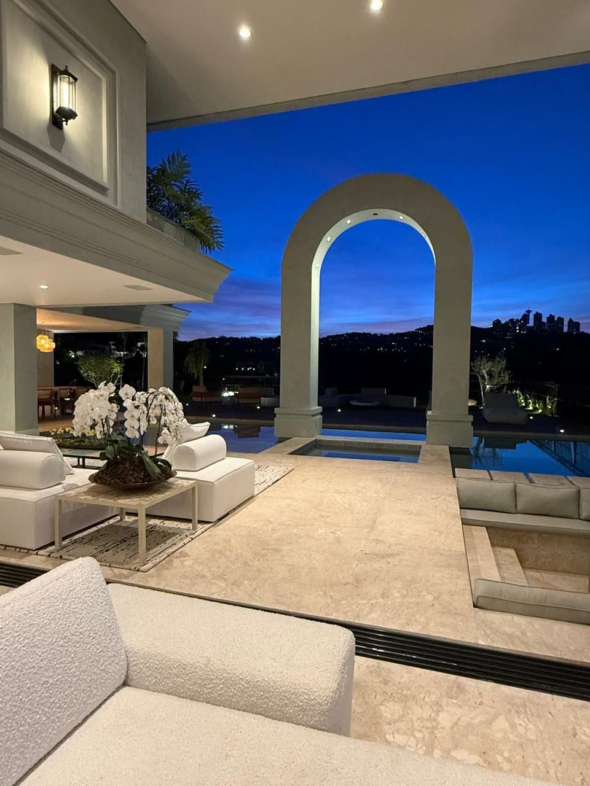
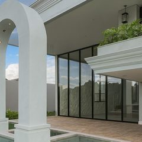
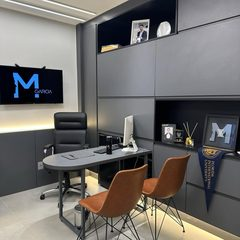
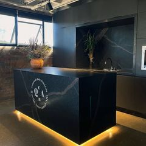
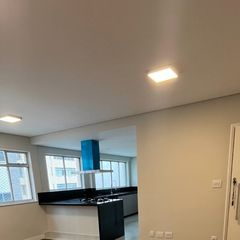
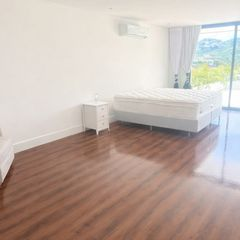
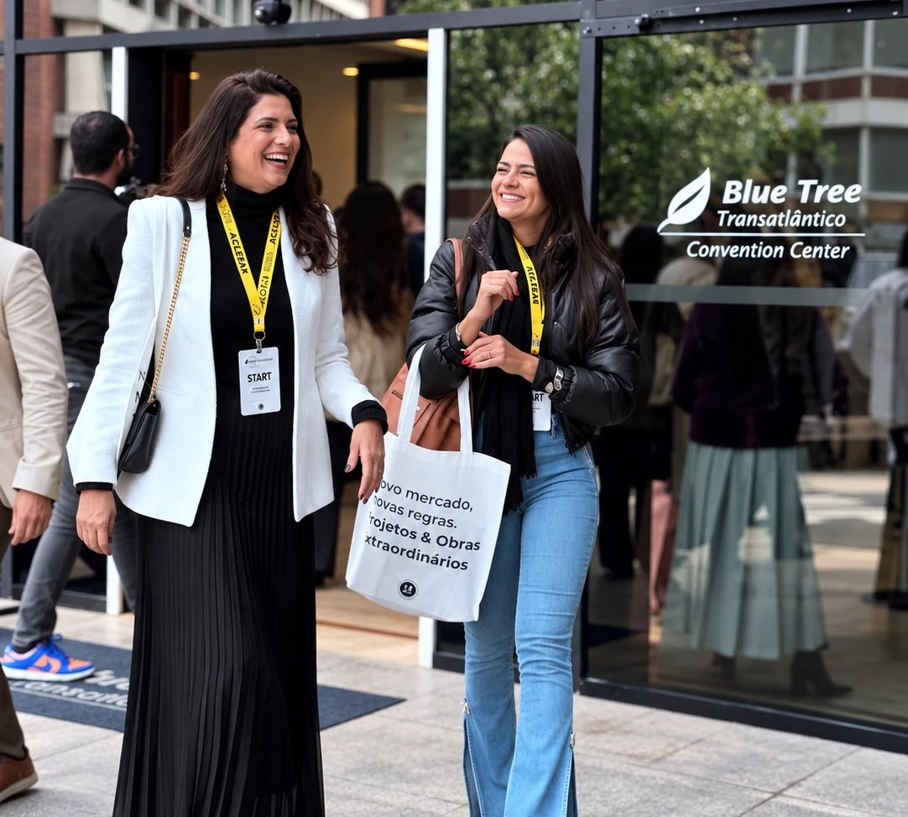

Engenharia & gestão de obras
Stephanie Faina
Engenheira civil especialista em gestão de obras. Cuida de cronograma, equipe e custo para que o projeto seja executado exatamente como foi desenhado.
CREA-MG nº 1413598390
Arquitetura & Engenharia · Belo Horizonte
Projeto, viabilidade financeira e execução com um só responsável — do primeiro tijolo à entrega.

Toda reforma tem duas partes. Uma você escolhe: revestimento, metais, tinta, iluminação. A outra não: regularização, demolição, elétrica, hidráulica, a parte cinza. Em dois orçamentos reais e independentes fechados pela Perla, essa segunda parte chegou a 37% do total.
Fonte: Perla Construtora, dois orçamentos reais de reforma residencial, 2026.
Arquitetura e engenharia trabalham juntas desde o início. É isso que evita a obra que cobra o que o projeto não resolveu.
Briefing da rotina da família, levantamento arquitetônico, projeto executivo e interiores.
O EVF transforma o projeto em números: custo por etapa, curva ABC e cenários para decidir com clareza.
Cronograma físico-financeiro revisado toda semana e equipe própria sob a engenheira responsável.
Checklist final item por item, obra limpa e com garantia. Você recebe a casa pronta para morar.
Escolha pelo momento em que você está. Todas terminam no mesmo padrão de entrega.

Para quem vai construir ou reformar
Projeto, EVF, gestão e execução completas. Um contrato, uma responsável técnica, zero intermediários.
Perla Transforma
Consultoria de layout, acabamentos e decoração para valorizar o imóvel com agilidade e sem quebra-quebra.

Arquitetura & Interiores
Projeto arquitetônico e de interiores com imagens 3D, aprovação na Prefeitura e regularização.
Formato próprio para médicos e dentistas: projeto, aprovação na Vigilância Sanitária, obra e marcenaria, com prazo pensado para a clínica voltar a faturar.
Residências, clínicas e reformas para investimento em Belo Horizonte e região.





Mães, empresárias e cristãs. Fundaram a Perla para que o cliente não tivesse que escolher entre projeto bonito e obra bem conduzida.

Engenharia & gestão de obras
Engenheira civil especialista em gestão de obras. Cuida de cronograma, equipe e custo para que o projeto seja executado exatamente como foi desenhado.
CREA-MG nº 1413598390
Arquitetura & interiores
Arquiteta e advogada. Une estética, funcionalidade e segurança jurídica, das aprovações na Prefeitura e na Vigilância ao último detalhe de marcenaria.
Alvará de localização e sanitário deferido! Tudo certo. A fiscal elogiou muito o projeto. Agradeço vocês mais uma vez por tudo!
Além de um projeto impecável e das ótimas sugestões, ela também se preocupava com o custo e o benefício de cada indicação. Meu consultório está confortável e maravilhoso!
Nesse ritmo aceleradíssimo que é minha vida, gerir uma obra seria praticamente impossível.
Fale com a Perla
Converse com a Perla sobre o que você deseja construir ou transformar.